Raincheck：把视觉预填充延期，而不把后续问题需要的信息永久删除
Raincheck 研究多轮多模态推理中的执行调度：先处理一部分视觉输入以尽快开始回答，再逐步补回暂时跳过的输入，让当前回答和后续追问能够使用更多证据。第一作者 Wenjie Huang 来自浙江大学；作者还包括 Jun Zhang、Hongyaoxing Gu、Haoyang Huang、Tianqi Xu、Xinyue Hao、Xinyi Hu、Xinle Du、Jun Dai、Shuang Ge、Chen Lei、Yue Li、Mingcheng Wan，合作机构包括阿里巴巴、中国科学院大学、卡内基梅隆大学、爱丁堡大学、清华大学及 WHU。论文首版公开于 2026 年 10 月 29 日 UTC，入口为 arXiv:2610.39562，本次阅读核验时间为 2026 年 11 月 2 日。原文介绍了 Transformers 和 SGLang 实现，本轮未核验到独立代码或项目入口，因此不宣称已开源，也未运行作者实验。
长多模态输入会推迟第一个输出，而按当前问题裁掉的视觉信息，可能恰好是后续追问需要的证据。降低首轮延迟不应以永久失去可复用上下文为代价：输入选择应决定何时计算，而不必决定哪些信息永远不可用。
1. 背景和问题
1.1 从当前问题的重要性到跨轮可用性
多模态输入的成本不只在视觉编码器。图像或视频经过视觉编码和投影之后，会成为语言模型需要处理的大量 token；语言模型必须先完成输入预填充，才能开始自回归输出。论文举例：按其 Qwen3-VL 输入配置，一段以每秒一帧采样的三十秒、七百二十行视频，约对应一万三千五百个视觉 token。即使最终回答只有一句话，开始这句话前的工作也可能很长。这使面向人的交互和离线批处理具有不同目标：前者尤其关心首个可见响应，而后者可能优先追求设备总体吞吐。
裁剪是直接的缓解手段。选择器可以依据显著性、多样性、视觉覆盖或当前问题相关性，挑出少部分 token 进入语言模型。问题是，当前问题只透露了当前一部分信息需求。只问人物手中拿着什么时，选择器围绕人物和物体集中计算很合理；追问环境何时变化时，之前看来不重要的背景就会变成证据。当前重要性和整个会话生命周期内的可用性，是两个不同的决策变量。把两者合并为一次不可逆裁剪，意味着后续推理只能在被第一问筛过的世界里进行。
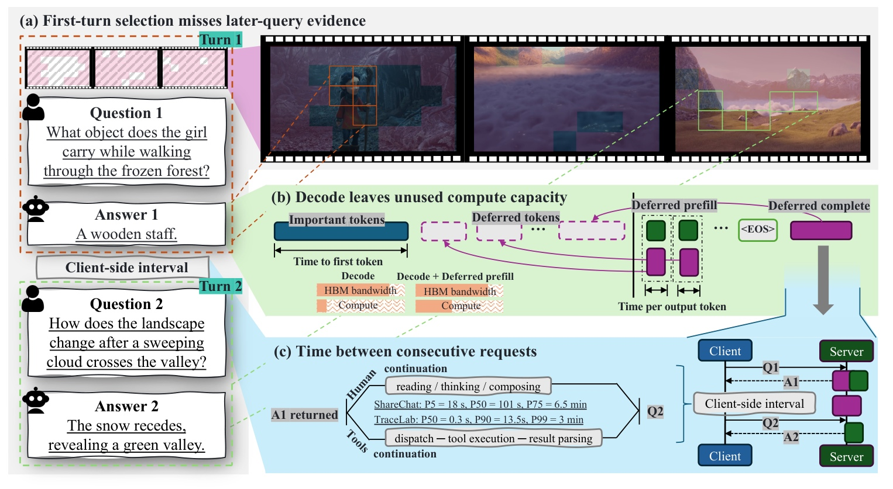
Figure 2 用三个面板解释延期计算为什么可能同时有必要和有机会。左侧同一段视频先问人物携带的物体，再问山谷景观的变化；第一轮保留人物区域，不保证第二轮所需的背景区域仍可访问。右上把解码画成受显存带宽约束的工作：读取大模型权重时，计算单元未必同样繁忙，因此可以把少量延期输入放进同一次执行。右下说明答案返回和下一次请求之间还可能有用户阅读、思考、工具执行等间隔。三个条件必须结合理解：证据可能遗漏，恢复需要计算，而调度机会取决于实际负载；单独观察到用户有空档，不能证明系统总有空闲 GPU。
图中把人的会话间隔和工具时长都标成恢复机会，但它们不是同一种统计对象。人的间隔包含阅读、组织语言和思考；工具轨迹的时长更接近一个程序调用的等待。两者来自不同数据源，不能合并成一个“下一轮必然晚到”的概率。作者由此提出的设计目标也很克制：用可用容量补回输入，而不是承诺所有请求都能把成本隐藏起来。若追问很早到来，已经延期的工作仍要有人承担；这个边界会在系统实验中重新出现。
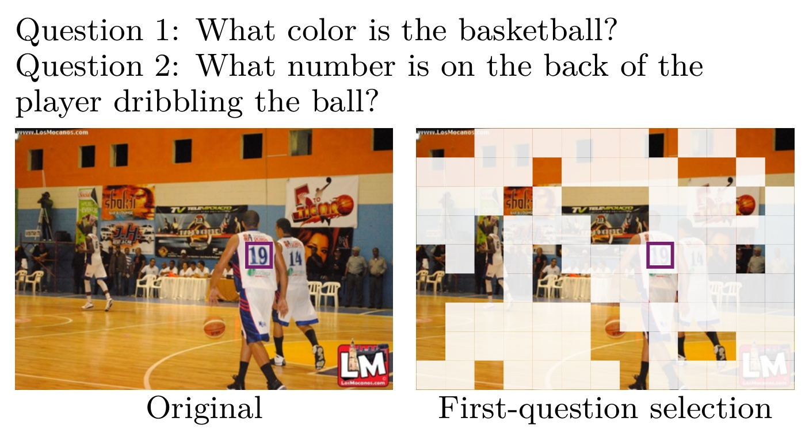
Figure 3 把跨轮需求变化具体化。左图是完整篮球场画面，紫色框指出持球队员背部的号码；右图是按第一问“篮球是什么颜色”选择后的视觉区域。篮球附近仍有可见信息，但号码区域已被淡化成未选中部分。第二问询问队员背号时，模型缺少的不是更长的语言推理链，而是输入层已经被删除的观测。这个例子解释了为什么单轮准确率足够高，也不代表裁剪策略适合连续追问。
同时，这只是一张诊断图，不是证明所有选择器都会丢号码的统计实验。第一问选点依赖模型、保留预算和具体选择算法；其他图片上也可能保留下来。Raincheck 的动机并不要求每次裁剪都错，而是指出一旦信息永久丢弃，后续轮次无法可靠纠正第一问的选择偏差。因此作者不替换已有重要性选择器，而是在选择之后改变信息的保留和执行策略。图中两句英文问题是原始 Figure 内部标签，其余正文已按中文解释，没有把英文段落当作笔记主体。
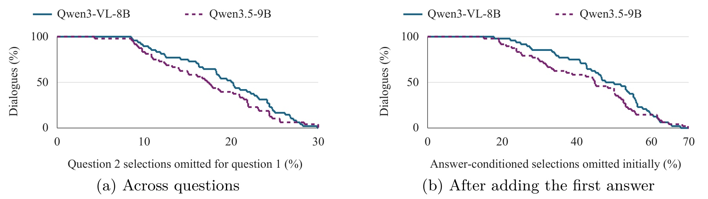
Figure 4 左图的横轴，是第二问选择集合中未被第一问选中的比例；纵轴，是遗漏比例高于该阈值的对话占比，所以曲线随横轴增加而下降。作者对四十八个 MultiVerse 对话、三成视觉保留预算做此分析，两种模型平均分别遗漏第二问所选 token 的 19.34% 和 17.32%。它测量的是选择集合变化，不是回答错误率，也不是全图有同样比例的信息无价值。右图把完整首答加入问题后重新选择，用于观察生成后才显露的证据需求，其遗漏范围更大。
右图尤其不能当成可部署选择器：完整答案是事后信息，初始预填充时拿不到。它的意义在于说明，连当前一轮正在生成的内容也可能改变哪些视觉区域值得处理。第一问选择既可能影响未来轮次，也可能漏掉当前答案后来需要的细节。作者因此把恢复安排在解码过程中，而不只安排在答案返回之后。不过，补回证据不会回滚已经输出的字词，也不会重算所有历史隐藏状态，所以当前回答能改善到什么程度必须实测，不能仅由“最终全部恢复”推出。
1.2 交互间隔不是免费的计算预算
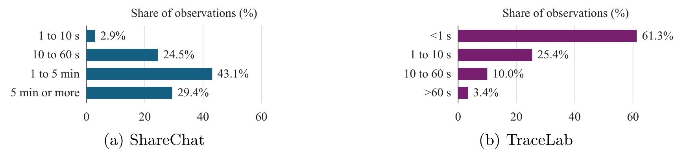
Figure 6 左侧来自清理时间戳后的 ShareChat 多模态消息间隔，共一百零二个观测；一到五分钟占 43.1%，五分钟以上占 29.4%，因此至少一分钟约占 72.5%，中位数约一百零一秒。右侧 TraceLab 的工具调用则以一秒以内为主，占 61.3%。横轴都表示观测比例，纵向分箱却体现截然不同的交互节奏。将图读成“所有交互都有一分钟恢复时间”会掩盖机器继续任务可能很快到来的情况。
这些数据支撑的是存在调度机会，而不是收益保证。即使用户很久才追问，服务端也可能同时承担其他请求；如果把恢复工作排在后台，它会竞争设备时间、缓存和内存驻留。反过来，工具调用很快也不意味着完全没有机会，因为短视频剩余恢复可能只需几十到几百毫秒。正确评估需要将剩余工作量、设备负载与下一请求到达分布联合起来，而论文这里只展示两类轨迹的间隔分布，以及单请求条件下恢复的测量结果。
从推荐和广告内容理解看，类似问题也出现在多次读取同一素材：先提取主体，再识别文字，最后询问风险细节。如果第一次查询就不可逆删除“无关”画面，后面的质量检查可能失去原始依据。不过这只是机制迁移判断，本文没有推荐线上实验。它更直接服务于多轮视觉助手：在第一轮快速响应和后续证据完整之间，提供一个可以调节计算时机的中间选项。其价值不来自减少所有工作，而来自把工作放到更合适的时间点。
2. 方法
2.1 延期预填充：先回答，再渐进扩大可见输入
Raincheck 首先调用一个已有选择器，把视觉 token 分成重要集合和延期集合。初始预填充包含重要视觉 token，以及全部文本、控制符和特殊 token；未选中的视觉 token 不永久删除，而是保留待处理状态。各集合内部保持原始顺序，随后以连续小块处理延期集合。这是调度层的改动：选择器仍决定先处理谁，延期机制决定其他信息是否还能回来。它不要求重新训练选择器，也没有引入一套能预测所有未来问题的 oracle。
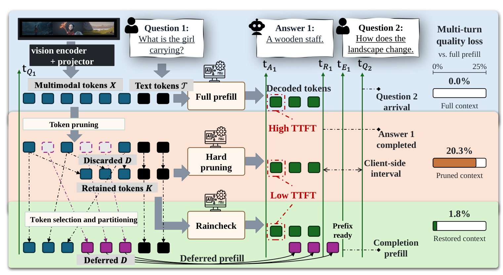
Figure 1 的三条路径分别是完整预填充、硬裁剪和 Raincheck。完整路径在开始回答前处理全部视觉输入，首个输出最晚，但保留完整上下文。硬裁剪只处理选中输入，很快进入生成，未选中的紫色位置永远不能补回。Raincheck 同样先用选中输入启动回答，再让紫色延期块穿插进入解码，答案结束后仍可继续 completion prefill。图中绿色竖线区分答案完成、前缀恢复完成和下一问到来三个时点，因此“用户已经拿到答案”和“缓存已可完整复用”不是同一个事件。
右侧给出一个特定配置的 ConvBench 平均分损失：相对 Full，硬裁剪约损失 20.3%，延期恢复后约为 1.8%。它对应 Qwen3.5-9B、MMTok、三成初始保留和三十一 token 恢复块，不是所有任务的统一常数。图中恢复后的质量也不等价于 Full：已输出答案不回滚，先处理重要集合还改变了一部分上下文计算路径。机制能够保留更多输入，使之后的 token 有机会看到更完整证据，却不保证重现完整预填充的生成轨迹。延期的是输入计算，不是把同一计算从时间线上无代价搬走。 从这幅图还可以看出，视觉编码器与投影器位于三条执行路径共同的上游，Raincheck没有减少这部分计算。若某个应用的首轮瓶颈主要在视频解码或视觉编码，语言模型预填充的节约就不等于相同幅度的请求端到端节约；图中的视觉阶段边界提醒我们，测量入口必须覆盖整个请求链。
训练和推理的区别也需要明确：本文评估的是现有模型上的推理执行方案，主要质量比较使用 Transformers，主要系统比较使用 SGLang；没有通过新训练目标让模型预先适应延期上下文。每块延期 token 完成后，会更新相应 KV 条目和循环状态，让后续输出可以读取它。选择比例控制开始回答前的成本，块长控制恢复速度与每步解码开销。保留比例过低可能让首答起步时证据不足，块长过大则可能明显拖慢正在输出的回答。
2.2 全注意力：给延期输入和输出使用不同可见性
对于全注意力层，主要困难不是额外存几段 KV，而是避免让输入状态依赖自己本不该看到的输出。延期视觉块虽然在时间上晚算，在语义顺序上仍属于输入；如果直接把它当成新生成 token 追加，视觉表示可能读到已经输出的答案，形成错误依赖。Raincheck 为延期预填充和当前解码设置不同注意力视图：延期块读取已经物化的输入前缀、在块内做因果注意力，但不能读取中间的尾部输入和已生成输出；当前解码 token 则可以读取已处理输入和生成历史。
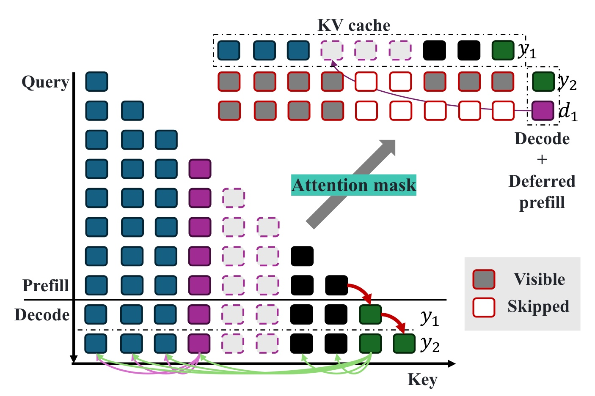
Figure 7 左边按处理顺序排列 query，蓝色是先处理的视觉输入，紫色是延期输入，黑色是文本或控制位置，绿色是输出。右上同一次融合步骤里，绿色 query 和紫色 query 的红色可见边框不同：输出可以读到此前已经可用的证据，而延期输入不能反向读取绿色生成历史。虚线紫格仍未完成物化，因此也不能被当前解码读取。图中不是简单扩大一个三角 mask，而是同时维护输入物化进度与输出因果关系。
底部绿色箭头说明新的输出 token 会使用扩大的输入可见集合，但此前绿色 token 的 KV 仍留在缓存中，没有随恢复而重算。这样可以避免整段后缀回放，却意味着完整预填充和延期执行不是严格相同的计算图。另一个实现要求是地址稳定：如果补入输入导致既有输出 token 的缓存地址移动，捕获好的 CUDA 图或指针映射就可能失效。作者的 SGLang 后端会提前预留延期页，并把物化进度与可见性分开管理；因此尚未有效写入的缓存位置必须保持不可见，不能因为内存已分配就被错误读取。
2.3 GDN：用仿射映射把前缀状态差传到当前端点
混合循环模型不能只插入 KV。Qwen3.5 的 GDN 层把过去输入压缩进固定矩阵状态，延期输入需要改变的是已经过生成后缀传播的 live state。论文采用每层每头的 key-by-value 方向表达状态。固定某 token 投影后的 key、value 和门控，其更新可写为原文附录式（6）：
符号解释：$S$ 是形状为 $d_k\times d_v$ 的历史状态；$k_x$ 和 $v_x$ 是经过短卷积与激活后的 key、value 向量，key 已归一化；$\alpha_x$ 是衰减门，$\beta_x$ 是 delta 更新系数，$I$ 是 key 维度单位矩阵。$A_x$ 对已有记忆先衰减并作秩一修正，$B_x$ 加入本 token 的写入。关键条件是投影和门控固定之后，该更新才对输入状态呈仿射关系；完整模型重算时，这些量可能改变。 多个 token 的更新可以组合。对有序后缀 $U=(x_1,\ldots,x_r)$，原文式（9）的核心部分是：
符号解释：$F_U$ 是处理整个后缀的映射，$P_U$ 是所有线性转移的有序乘积，最右因子最先作用；$B_U$ 汇总各 token 的加性写入及其之后的传播。$P_U$ 的形状是 $d_k\times d_k$，$B_U$ 与状态一样是 $d_k\times d_v$。因此不用保留每个历史 token 的完整中间状态，也能记录“输入状态变化将如何影响当前端点”。这与仅保留最后一个循环状态不同：后者不知道如何把早先位置的变化传到现在。
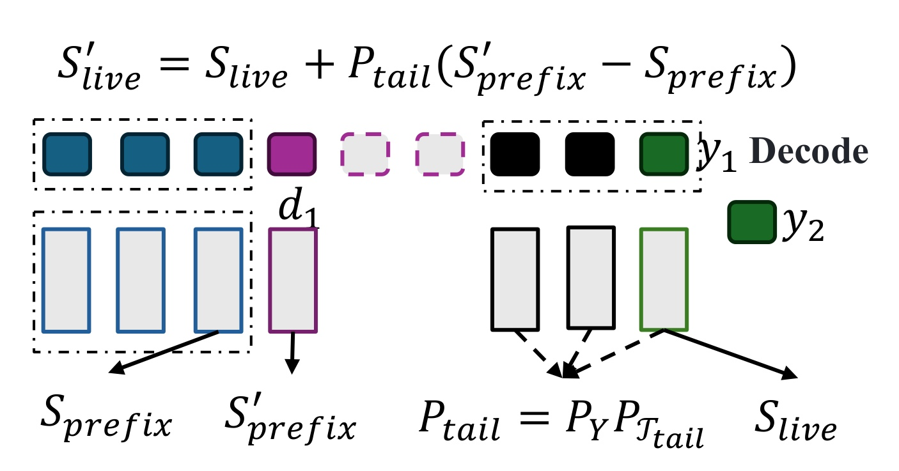
Figure 8 左侧的两个状态标记同一个恢复边界，分别对应补入延期 token 前后的前缀；右侧 live 状态则位于已经处理完尾部文本和输出之后。紫色块加入后不能直接替换右侧状态，否则会丢失黑色尾部和绿色生成 token 的贡献。图上的公式把前缀变化量乘以尾部转移，再加到旧 live 状态上，正好保留这些已累计的加性项。它处理的是两个端点之间的状态差，而不是把延期 token 当成末尾新输入。
图中 $P_Y P_{T_{\mathrm{tail}}}$ 还有顺序意义：先通过中间尾部输入，再通过生成历史，矩阵乘积不能随意交换。状态差传播保留的是固定因子下的数学关系；图本身没有证明所有高层表示都与完整重算一致。低层上下文改变，可能让高层 token 的 key、value 和门控发生变化，原先记录的因子就只是近似。作者在附录专门分析了这个差异，并保留已发出的 token 和历史隐藏激活。因此它支持高效继续推理，不能被描述为完全无损的历史修复。 在原文主式（1）中，前缀与当前端点满足：
符号解释：$S_{\mathrm{prefix}}$ 位于待恢复输入边界，$S_{\mathrm{live}}$ 是当前生成位置的状态，$T_{\mathrm{tail}}$ 是两者之间的文本、控制符等输入，$Y$ 是已处理输出，$B_{\mathrm{tail}}$ 是尾部累计加性贡献。补入延期输入得到新前缀状态后，两次映射的加性项相消，得到原文主式（2）：
符号解释：撇号表示在同一个后缀端点完成延期输入更新后的状态；括号中是前缀变化量，乘以尾部矩阵后才是当前状态需要的修正。它不用单独重建 $B_{\mathrm{tail}}$，因为旧 live 状态已经包含该项。随后下一个输出 token 使用修正后的状态；此前已经完成的输出不会因此重新采样。 转移矩阵本身也要在线更新。新输出 $y$ 到来时，原文式（13）将一般矩阵乘法化成可利用秩一结构的表达：
符号解释：$\Vert$ 表示在既有生成后缀后追加一个 token；$P_Y$ 是旧后缀映射，$k_y$、$\alpha_y$、$\beta_y$ 是该 token 已有的 key 和门控。每头维护 $d_k^2$ 个矩阵元素，更新算术为 $O(d_k^2)$，不随已生成后缀长度增长。但它依然增加状态维护和存储，不能把“避免整段重算”理解成“没有额外计算”。 短卷积还带来边界修复：插入延期输入会改变最早几个生成 token 的卷积历史，宽度为 $w$ 时，在固定卷积前投影下，至多前 $w-1$ 个转移受直接边界影响。作者保存这一小段并重算其 key、value 和转移，之后才对剩余后缀使用记录因子，对应式（14）：
符号解释：$S_{\mathrm{anchor}}$ 是边界敏感小段之后的锚点状态，撇号表示修复后锚点；$U_{\mathrm{rest}}$ 是剩余后缀，$P_{U_{\mathrm{rest}}}$ 传播锚点差。剩余后缀为空时转移为单位矩阵。这里的有界重算解决局部卷积历史变化，但仍没有重算所有层的历史隐藏表示，近似边界继续成立。
2.4 融合执行与恢复完成
同一解码步骤把当前输出 token 和一小块延期 token 放入同一次 decoder 执行，密集投影和 FFN 因而可以共享权重读取；全注意力部分保持不同可见视图，GDN 则先更新输入状态、修正 live state，再处理解码。常见形状是七、十五或三十一个延期 token 加一个输出 token，对应八、十六或三十二行，适合固定形状 CUDA 图。最后不足一块的余量使用更小形状，不必为填满批次而处理无关输入。
如果答案已经结束但恢复尚未完成，服务端先返回答案，随后利用调度空档处理余下输入。论文实际评估的策略在下一轮复用之前完成全部恢复；追问提前到达就等待前缀就绪。附录提到允许未恢复完就接纳新文本的可选策略，以及分离 prefill/decode worker 的状态 join，但这些不能代替主实验的保证范围。主方案把信息恢复和可复用状态绑定，因此需要同时观察用户响应时间、恢复完成时间和后续轮次等待，而不能只优化其中一个边界。
3. 实验结果
3.1 相同初始选择下，恢复能改善多少质量
两种模型分别覆盖全注意力与 GDN 混合架构：Qwen3-VL-8B 和 Qwen3.5-9B。每种模型适配 MMTok、HiPrune、DivPrune 和 VisionZip-Select 四类选择器，Full 表示完整预填充，Hard 表示同一选择器裁剪后不恢复，Ours 则添加延期恢复。主要对比初始视觉保留三成，并匹配输入、选择设置和采样种子；质量生成关闭 thinking。这里比较的是输入可用性策略，不是把完全不同选择算法的分差全算成恢复模块的收益。
MultiVerse 有六百四十七个对话、二千五百三十六个评分轮次，以 checklist 与回答质量评分；ConvBench 有五百七十七个三轮对话，以固定 caption 和当前问题条件下的双顺序偏好评测；视频数据有一百一十九个可用视频、九百零二个对话、五千三百一十一个轮次，最终按六个类别等权聚合。各任务分数都在零到一百分范围内，但评分对象和聚合不同，不能跨数据集直接比绝对分数，也不能把 ConvBench 主指标直接等同于整个对话一致性。
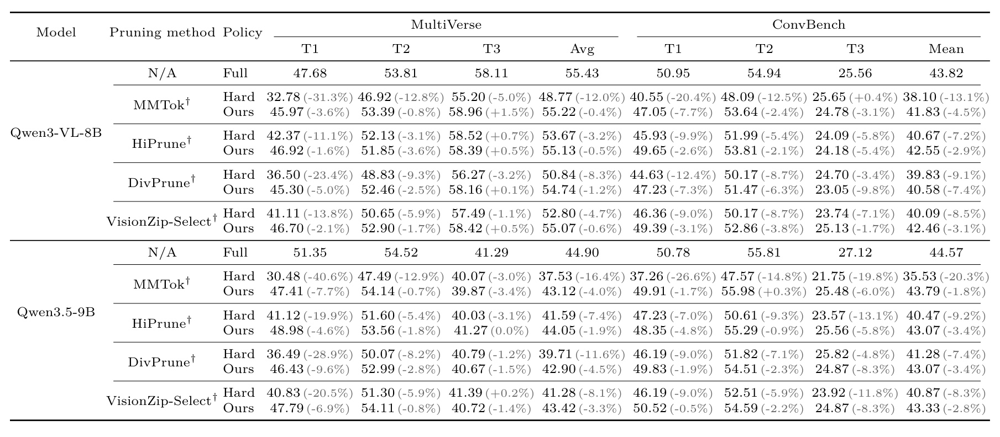
Table 2 的首要读法是每一个选择器内比较 Hard 和 Ours，再看它们离同模型 Full 有多远。Qwen3-VL 配 MMTok 时，MultiVerse 汇总分从 48.77 提升到 55.22，接近 Full 的 55.43；Qwen3.5 同配置从 37.53 到 43.12，Full 为 44.90。八个模型与选择器组合的 MultiVerse 汇总都改善，平均恢复 Full 到 Hard 损失的 77.7%。这个恢复比例的分母是裁剪造成的分差，不是 Full 总分；它更不是准确率提高了七十七个百分点。ConvBench 的八个汇总也全部改善，平均恢复损失 60.4%，但平均不是每个单元格的恢复率。
逐轮读取会看到更细边界。Qwen3-VL 的 HiPrune 在第三轮从 Hard 58.52 降到 Ours 58.39；Qwen3.5 的 MMTok 第三轮从 40.07 降到 39.87。总体改善不推出每一轮改善。ConvBench 中 Qwen3.5 配 MMTok 从 35.53 到 43.79，距 Full 44.57 很近，但 Qwen3-VL 配 DivPrune 从 39.83 到 40.58，仍明显落后 Full 43.82。恢复效果依赖模型和原选择器漏掉什么，也受已生成轨迹影响。作者没有用统一纠正因子把所有组合解释成同样过程，这让结果比一个平均恢复比例更可信。
恢复比例也需要按每个组合自己的Full减Hard损失归一化，再跨组合平均。以Qwen3-VL的MMTok为例，Full与Hard相差6.66分，Ours比Hard多6.45分，接近找回全部损失；Qwen3.5同选择器则找回5.59分，而原损失为7.37分，仍有可见缺口。两者不能先把分数总和混起来，再把比值当作每个配置的结果。表中括号是相对Full的变化，行间相减是分数点，也不能混作同一种百分比。不同模型的Full能力本来不同，故恢复率高也不保证最终绝对分更高。
评审协议进一步限定了证据强度。MultiVerse评审能够读取图像和因果历史，ConvBench主协议则用固定caption及当轮参考进行双顺序比较，二者对跨轮一致性的直接敏感程度不同。重复使用同一个caption有助于匹配条件，却不等于逐像素核验每个回答事实。作者另做完整对话支持端点，不能因此把主表每个逐轮偏好分都称为对话可靠性。
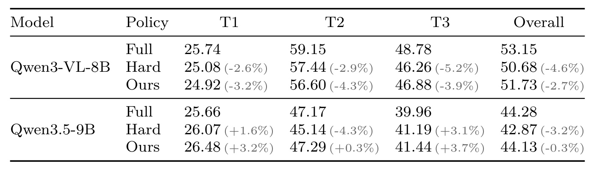
Table 3 换成 MMTok、三成初始保留的视频配置。Qwen3-VL 的总体分从 Hard 50.68 到 Ours 51.73，Full 为 53.15；Qwen3.5 从 42.87 到 44.13，接近 Full 44.28。整体增益分别为 1.05 和 1.26 个分数点，明显小于部分图像配置，却仍说明恢复在视频多轮中有用。总体列按所有标注轮次和六类任务聚合，前三轮列的类别混合不同，不能简单对 T1、T2、T3 求均值来复算 Overall。
Qwen3-VL 的第一轮从 25.08 退到 24.92，第二轮从 57.44 退到 56.60，第三轮才从 46.26 提升到 46.88。因此这张表不支持“恢复总能改善当前首答”；它支持的是在指定视频集合与聚合下，总体质量优于硬裁剪。Qwen3.5 部分 Ours 分数还能高于 Full，说明生成轨迹和评审噪声都会产生非单调现象，不能将个别超出 Full 的分数解释为恢复比全部证据更有信息。更合理的结论是，完整恢复通常能缩小裁剪损失，但不是精确还原原始生成。
视频表的第一轮与总体还有人口差别：不同任务类别具有不同对话长度和轮次，因此进入第一轮、第二轮和后续轮次汇总的任务组成不完全相同。不能看到第三轮分数较高就归因为恢复已经完成，也不能把第一轮低分全归咎于缺少视觉token。论文的设计是在相同配置内比较三种输入可用性策略，而不是用不同轮次做因果对照。对于首次回答已犯错的样本，后续恢复保留原输出，可能改善后问，也可能延续误导性历史；Table3没有单独给出这类错误传播的条件结果。
视频场景尤其需要查看类别和案例而非单一总分。附录的例子使用六十四token恢复设置，既展示新增解释提高checklist分，也展示视觉细节遗漏；它不等于主表三十一token设置上的逐例成功证明。对应用侧，动作、空间关系或文字识别的关键细节应有独立核验，而不能以总体接近Full为理由跳过精细任务验收。
3.2 时延收益必须连同恢复段和后响应成本一起读
主要系统实验在单张 NVIDIA H20、每个 worker 一个正在运行请求上进行，最多每步恢复三十一个 token。图像时延使用四十八个对话并重放相同的五百一十二 token 输出轨迹；视频使用模型各自 Full 生成的自然结束轨迹。固定输出轨迹把可用性策略与生成长度差分开，但也意味着时延对照不是完全自主生成、任意负载下的最终用户体验测试。端到端 E2E 截止最后一个输出，明确排除答案返回后的剩余恢复。
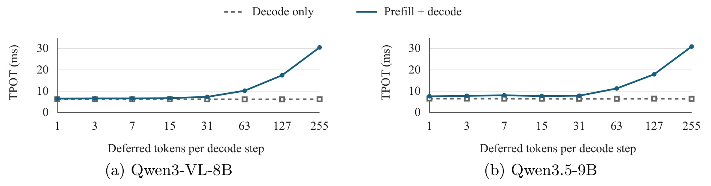
Figure 5 的横轴是每个解码步骤加入的延期 token 数，纵轴是对应输出位置的 token 间隔。灰色 decode-only 近似平坦，蓝色融合执行在小块时接近灰线，到六十三、一百二十七、二百五十五 token 时明显上升。三十一 token 下，论文位置匹配诊断中 Qwen3-VL 由 6.15 到 7.33 毫秒，Qwen3.5 由 6.43 到 7.88 毫秒。恢复不可能在任何块长下免费；闲置算力只足以隐藏一部分新增工作，超过该余量后就直接拉长输出间隔。
这与摘要“平均 TPOT 增加不到半个百分点”并不矛盾。摘要平均覆盖整段图像输出，其中恢复完成后的大量步骤回到普通解码；本图只比较恢复正在发生的位置。视频需要恢复的 token 约多一个量级，答案又较短，恢复步骤所占比例更高，所以整体平均 TPOT 更容易上涨。工程侧应同时记恢复期 TPOT、整段 TPOT 和首 token 时间；只记整段均值，会把最明显的抖动摊薄。图中较大的块也不是越快恢复越好，它要求在当前响应质量、输出流畅程度和后续等待之间做选择。
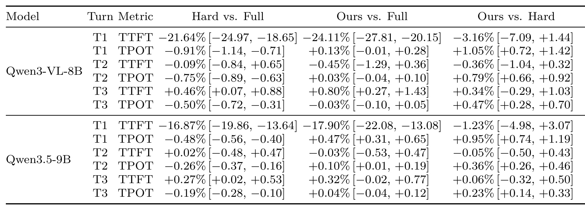
Table 25 用完整配对区间表补充主文时延证据。原 PDF 的 Table 4 右栏对象越过第八页底部，部分末行在页外并与页码混叠，因此本笔记没有把不完整对象截成“完整结果表”；均值仍可由文本核验，区间以这张附录表为准。MultiVerse 首轮 TTFT，Qwen3-VL 从 Full 的 169.94 毫秒到 Ours 128.96 毫秒，减少 24.11%，对应区间为约负 27.81% 至负 20.15%；Qwen3.5 从 171.20 到 140.56 毫秒，减少 17.90%。两者平均 TPOT 相对 Full 分别增加 0.13% 和 0.47%。
Ours 相对 Hard 的 TTFT 点估计还有约 3.16% 和 1.23% 的降低，但两者置信区间均跨零，因此不能宣称融合恢复明确比不恢复更快。反过来，Ours 相对 Hard 的首轮 TPOT 增加约 1.05% 和 0.95%，区间在正侧。续轮 TTFT 也未必继续降低：Qwen3-VL 第三轮相对 Full 增加约 0.80%。这张表支持“保留接近裁剪的首轮响应速度，同时恢复更多信息”，并不支持全轮、全指标都获益。不同表的人口与输出轨迹也需要保持一致，不能把此图像区间直接套到视频。
视频恰好说明平均 TPOT 的例外。论文报告 Qwen3-VL 和 Qwen3.5 视频首轮 TTFT 相对 Full 分别下降 13.06% 和 11.91%，但平均 TPOT 分别增加 19.93% 和 14.92%；E2E 仍下降 4.83% 和 6.56%，因为初始预填充节约超过输出减速。Hard 的答案完成依然更早，只是没有恢复可供追问使用的视觉输入。因此不能只摘取摘要里图像的半个百分点，概括整个多模态场景。
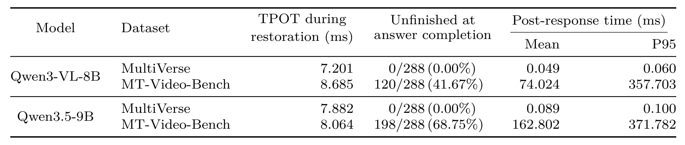
Table 5 将恢复期 token 间隔、答案完成时未恢复比例、以及答案之后到前缀就绪的时间分开列。两种模型的 MultiVerse 五百一十二 token 轨迹在答案结束前都已完成恢复，因而未完成数为零；视频的 Qwen3-VL 却有 120/288 个观测未完成，占 41.67%，Qwen3.5 有 198/288，占 68.75%。视频后响应恢复平均约 74.024 与 162.802 毫秒，P95 约 357.703 与 371.782 毫秒。这些均值包含已经完成恢复的请求，不能理解成仅未完成请求的条件均值。
恢复期 TPOT 的视频数值约为 8.685 与 8.064 毫秒，同样高于图像整体平均所暗示的成本。若用户在这些后响应区间内发出追问，主实验策略会等待恢复完成，等待应进入下一轮的体验统计。若用户较晚才追问，该成本可能落入不可见间隔，但它仍然消耗 GPU。表格因此同时给出机会与代价：答案可提前交付，前缀也可能在追问前准备好；不过前者不是后者的证明，后一项需要结合到达时机和服务端调度验证。
还要区分表中的两个恢复期量。TPOT during restoration只在正在处理延期块的解码间隔上聚合，后响应恢复则发生在答案已经返回之后；二者的观测边界不同，不能把后响应毫秒数除以输出长度，再加回前者来重算整段TPOT。表中分母288是该时延实验的观测数，不是MultiVerse全量647对话，也不是视频全量902对话，重复测量和不同实验人口不可当作新增独立样本。
P95接近三百六十至三百七十毫秒，也表明均值不足以预测用户快速追问时的尾部体验。连续自动任务若不经过人的阅读间隔，可能经常撞上恢复尚未完成的时间窗；交互系统若因此阻塞第二问，就要把这段等待归入第二问首token时间。系统调度可以决定在哪里支付成本，但不能让相同输入的剩余计算凭空消失。
3.3 保留率和块长：质量恢复不完全单调
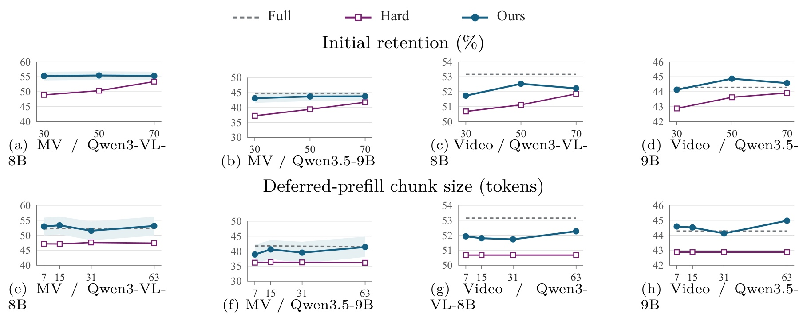
Figure 9 上排固定恢复块长，改变初始保留率；下排固定三成保留，改变每步恢复块长。每个面板使用自己的纵轴范围，不能从折线视觉斜率直接比较哪个数据集收益更大。上排图像模型的 Ours 大体接近 Full，Hard 随保留率增加而改善；视频的 Ours 则存在非单调变化，Qwen3-VL 在五成保留时的恢复收益大于三成。更多初始信息既改变首答起点，也改变后续状态，所以“保留越少、恢复收益越大”只能作为常见现象，不能当规律。
下排的四个块长是七、十五、三十一、六十三 token。MultiVerse 的八个模型与块长比较中 Ours 都高于 Hard，差值范围约 2.73 到 6.23 分，但仅六组配对区间严格高于零。视频不同块长的分数跨度较小，两个模型分别约 0.54 和 0.85 分；另一个六十四 token 视频设置在 Qwen3.5 上比三十一 token 高 1.32 分，并有排除零的配对区间。六十三和六十四不是随意互换的标签，也不能将不同样本设置的点直接拼成一条曲线。对实际系统，更有用的是找到质量趋稳而恢复期时延尚未陡增的区间，而不是挑单个最高分。
3.4 存储与近似误差不能被首轮收益遮住
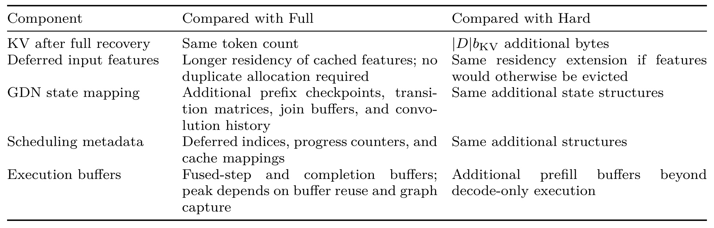
Table 7 第一行最关键：全部恢复后，Raincheck 和 Full 的有效 KV token 数相同；相对 Hard，则要多存延期集合对应的 KV。它主要重排计算时机，并没有获得硬裁剪长期保持小缓存的容量节省。SGLang 还提前预留延期页以稳定生成 token 地址，因此“尚未算出”不等于“这部分显存永远不用分配”。视觉特征缓存需要更久驻留；如果直接复用已有分配，可以不另拷贝，但与其他请求、执行缓冲重叠时，峰值显存仍可能上升。
GDN 额外需要前缀 checkpoint、转移矩阵、join buffer 和卷积历史。论文给出的 Qwen3.5 形状下，二十四层转移矩阵合计四十八 MiB，包含在一百九十二 MiB 辅助循环状态池内，普通 KV、模型权重和其他图缓冲另算。附录单层固定因子诊断中，长度六十四到四千零九十六的后缀，join 相对误差约 0.0672% 到 0.0851%，在线维护额外约每 token 两微秒。这只验证记录因子下的数值实现，不是完整模型质量损失上界，也不是每个线上请求仅增加同样微秒数。对批量服务，还需加上每请求状态管理和调度竞争。
综观实验，本文最有力的证据是匹配选择器的质量对照和单请求融合执行的实测。它清楚展示了三成初始预算下可以找回大量裁剪损失，也展示了视频和短答案使延期工作更难隐藏。证据尚未覆盖高并发吞吐、其他循环架构、推测解码与不同用户到达分布；这些不属于已验证结论。分开看输入恢复比例、整段质量分、首轮响应、恢复期速度和最终缓存大小，才能知道实际系统究竟付出了什么。
4. 总结
Raincheck 最值得保留的机制，是把视觉 token 的保留决策拆成“先处理”和“稍后处理”。硬裁剪对第一问的局部最优选择，很容易变成整个会话的永久信息边界；延期恢复则让快速起步和后续证据完整有机会兼得。全注意力通过可见性维护输入与输出的依赖，GDN 通过尾部仿射映射传播前缀状态变化，融合执行利用小批解码的权重读取机会。这些设计连成一条明确系统链路，而不是仅换一个更好的视觉重要性打分器。
我的判断是，它适合以响应速度为优先、同一素材会被多次追问、且请求间确有空档的视觉助手。在推荐内容审核或广告素材理解中，可以借鉴“先交付低成本观测，再补齐证据以支持更深查询”的执行思想；但业务迁移需要重新定义何时允许给出结论。若第一轮涉及高风险细节或证据不可缺省，就不能只因 TTFT 更低而提前回答。对大模型 Agent，工具等待也可能提供恢复机会，不过 TraceLab 的短调用占比提醒我们，机器触发的追问并不一定给后台计算留下足够时间。
至少四个限制需要与结果一起保存。第一，系统主测量是单请求、单 H20，较大 decode batch 可能已经用尽计算余量，延期块会直接增加迭代时长。第二，状态 join 对记录因子精确，但完整输入会改变高层隐藏表示，不能称为与完整重算等价。第三，全部恢复后的缓存规模接近 Full，另有循环状态辅助池及特征驻留，延迟改善不自动等于容量改善。第四，视频平均 TPOT 增长明显，早到追问还会等待前缀就绪，首轮 E2E 排除了后响应恢复。第五，质量由不同任务和模型评审协议给出，某些轮次和类别退步；平均恢复率不代表每次回答可靠恢复。
下一步首先应复现低批与高批条件下的联合质量、时延和峰值显存曲线，同时报告首 token、恢复期 token 间隔、答案返回和前缀就绪四个边界，因为用户体验取决于哪个成本被移动到哪里。其次，应对状态映射做完整重算对照，逐层量化记录因子变化及卷积边界修复的作用，区分数值误差和模型近似误差。再次，应在自然到达的多轮轨迹上研究自适应恢复块长：设备忙或追问将到时降低恢复预算，空档充足时加速，而不是固定套用三十一 token。最后，值得关注官方实现是否公开并补齐并发与推测解码接口；在独立代码入口未核验前，本笔记只讨论论文证据，不把后端描述当作可直接部署的软件承诺。
从研究设计上，我还会把它与永久压缩和按需检索分开比较。永久压缩争取减少未来所有轮次的存储与读取，按需检索在新问题到来后再决定补算谁；Raincheck则先保留全部延期集合，并按源顺序主动恢复。三者适用的会话长度、设备空闲和材料规模不同。若后续追问很少，主动恢复可能做了不会被使用的工作；若后续追问密集且主题变化大，提前补齐更有价值。未来对照应统计恢复token真正被后问利用的比例、会话总GPU时间和缓存驻留成本，再判断何时应全恢复、何时只恢复一部分。这个问题需要新的系统实验，本文现有单请求结果尚不能替我们给出最优策略。